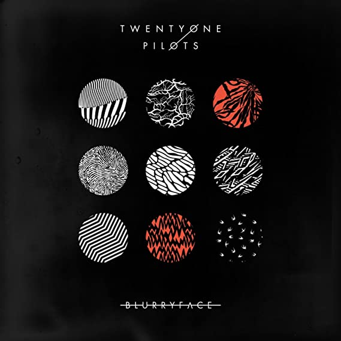

Twenty One Pilots
BLURRYFACE
Blurryface é o quarto álbum de estúdio da dupla estadunidense Twenty One Pilots.
Abaixo você pode encontrar a tracklist completa do álbum:
- Heavydirtysoul
- Stressed out
- Ride
- Fairly local
- Tear in My Heart
- Lane Boy
- The Judge
- Doubt
- Polarize
- We Don't Believe What's on TV
- Message Man
- Hometown
- Not Today
- Goner
Abaixo é possível visualizar a arte da capa que estampa o projeto do duo
Abaixo você pode escutar o álbum no Spotify